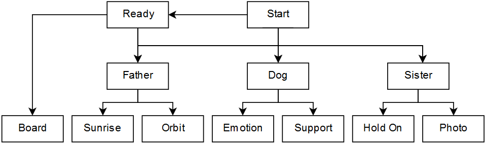

2-minute tutorial
You can write your first piece of interactive fiction in just two minutes, after you've installed Twee2. Just follow the steps below. When you're ready to move on to more-complicated adventures, see the full documentation.
1. Install Twee2
If you haven't installed Twee2 yet, do that first.
2. Open your text editor
You can write code in any text editor: your computer will almost-certainly already have one installed. On Windows, you can use Notepad. On MacOS, TextEdit is available (be sure to select "Make Plain Text" from the Format menu). On Linux, you might use GEdit, Kate, Emacs, Vim, Pico, or something else entirely.
If you have a favourite text editor, you can use that: personally, I like Sublime Text, which is available for a variety of platforms and supports source code highlighting for Twee2.

3. Write some code
To begin with, copy-paste the code below on the right into your text editor (or download it here - you might need to right-click and select "Save as..."). Later, you can experiment with changing this file.
Notice that the file is broken up into several
passages,
each of which is preceeded by a title - the titles each begin with two colons (::).
Two of the passages in this code are special. The
::StoryTitle
passage contains the name of our story and by convention it appears at or near the top
of the file. The
::Start
passage is
usually
the one that the player reads first, when they play your game.
Save your file as
escape-from-earth.tw2.
You can use any file extension you like, but conventionally Twee2 files have a
.tw2
suffix to differentiate them from other types of files. If you're using Notepad for
Windows, you might need to select "All files" from the "Save as Type" drop-down while
saving, or else Windows will put
.txt
on the end of the filename.
To compile your code, open a command prompt or terminal in the same directory as your code file, and run:
twee2 build escape-from-earth.tw2 escape-from-earth.html
Twee2 will compile a HTML output file based on the code. Open this HTML file in your preferred web browser e.g. by double-clicking on it, and you can play your new story. Or play it online to discover what you might expect to see.
This short story is a very simple adventure. It might be easiest to describe in terms of a flowchart:

In each passage, the player may click a link to be taken to a different passage. Links appear in the code
as some text, an arrow
(->),
and the name of the passage that the player will be taken to upon clicking it. So the code
[[Read the book->Read Book]]
would show the text "Read the book" to the player, and if they click it they'll be taken to the passage that
begins with
::Read Book.
You can use Markdown formatting to style your text. Note the asterisks around the words "THE END" in
Escape from Earth:
these make that text appear in bold.
::StoryTitle Escape from Earth ::Start There are only hours left before the asteroid hits and, if the news is to be believed, all life on Earth is extinguished. The spaceship is fuelled-up and [[ready to go->Ready]], but after all the rush of the last few weeks, you don't feel like you've had a chance to say goodbye to the planet that's been your home your entire life. [[Your father->Father]] glances over to check that you're heading into the vessel as he shepherds [[the family dog->Dog]]'s out of the hangar door. Behind the barriers, [[your sister->Sister]] gives a sad wave, clutching a photo in her hand. ::Ready You've still got a few seconds before you absolutely have to [[get on board->Board]], if you'd like to go and [[help your father->Father]], say goodbye to [[the family dog->Dog]], or check up on [[your sister->Sister]], who you're having to leave behind. ::Board No, you decide, the time for goodbyes has passed. After your weeks of preparation for the journey through space you don't feel the need to tie yourself to Earth any more-strongly than you have to: it's already hard enough to let go. One at a time, you climb the steps into the rocket ship and find your seat. You close the blind that cover your tiny circular window and take a deep breath. Letting go isn't easy, but there's no reason you should make it harder for yourself. **THE END** ::Father You run to help your father with the dog, trying in vain to keep your mind occupied by anything but the evacuation. Wordlessly, you walk together to the door and hand over the dog's lead to the armed guard there. For a moment, you feel bad about leaving him with a stranger, but in six hours it won't matter anyway. Looking out through the hangar door, you feel a momentary pang of jealousy for those left behind: they get to [[watch one final sunrise together->Sunrise]]... meanwhile, you and the other "lucky" ten-thousand survivors will be [[in orbit->Orbit]], weightless but still weighed-down by your grief over the billions of deaths below. ::Sunrise It's an impulsive moment and you might not live to regret it, but right now, it's the right choice: as the guard is distracted by the dog, you duck under the barrier and run out into the cold night. Minutes later, you hear the deafening boom of the rocket lifting off, and you know that you're among those left on Earth. You find your sister and your mother and exchange hugs. Then, in quiet contemplation, you sit and watch your final sunrise as the first meteor fragments graze the sky. **THE END** ::Orbit Who is making the greater sacrifice, you wonder? Those billions who will die here on Earth, today, or the ten thousand evacuees who are to make their way to the Martian colony? But it's about more than sacrifice: it's about duty. Your age, gender, and health made you eligible for the lottery; your father was chosen for his expertise as a scientist. Now you owe it to your species and to those you leave behind to continue humankind's legacy. The rocket blasts off, and you look back through the window to see the lights of the planet below, artificially-lit for the last time. **THE END** ::Dog The old family dog's been your faithful friend for years, and it feels wrong to leave without saying goodbye. You almost envy him that he doesn't know what's coming for him and all of the humans that will be left behind. Suddenly, you're [[overcome with emotion->Emotion]]: everything you'd pushed down inside you since you heard the news that you'd won the evacuation lottery, last month, comes welling to the surface. Your father wraps his arms around your shoulders and gives you [[a squeeze of support->Support]], bringing your focus back to what must be done. ::Emotion It's no use trying to hide it any longer. You can't hold back the tears. Each wave of grief is followed by a wave of guilt: why should it be you that survives when so many others face almost-certain death? And then, once again, grief at the loss of everything you know and love. Your legs buckle, and the dog tries to comfort you, but he doesn't understand. It's your father who eventually helps you to your feet and back towards the rocket ship. You can't bring yourself to look back as you climb the steps, using all of your emotional energy just to make it onto the craft. You'll never recover from this suffering, you're sure of it. **THE END** ::Support "Goodbye, boy," you say, scratching the dog behind the ears. He looks up at you with concern in his eyes, sensing your discomfort, and you try to make your voice as reassuring as possible. What does it say about you, you wonder, that your last words on Earth were to an animal? Later, in the shuttle, you'll lose the last of your emotional reserves and break down: but for now, you need to be strong. You are the face of hope for the future of the human race, and it's time to take your place on Mars. **THE END** ::Sister In violation of the rules you were told as you entered the hangar, you turn and sprint across to your sister at the barriers. Reaching over the fence and with tears in your eyes, you give her one last hug. You try [[not to think->Hold On]] about the fact that this time, when you let go, you'll be letting go forever. She clutches you tight, and you can feel [[the photo->Photo]] in her hand scrape against the back of your neck. ::Hold On You're still locked in an embrace when the armed guard comes and separates you. You know that you shouldn't have, but you couldn't have left without saying that one last goodbye. You're shepherded swiftly onto the spaceship, and you're disappointed to disover that your window doesn't look in the direction of the crowd. You'd had this romantic idea that you'd be able to look back on your sister as you took off, but it wasn't to be. The rockets ingnite, and you take a deep breath. Here begins the first chapter of your new life, and ends the last chapter of your old one. **THE END** ::Photo "I wanted you to take this," your sister says, thrusting the photo into your hands. You recognise the photo: you took it at arms-reach to capture the pair of you, sitting out on the grass under a starry sky while, in the background, your father shows off a telescope to a group of onlookers. You stuff it into your pocket before the security guard arrives to shepherd you back towards the rocket ship. Weeks later, you'll frame it in your new home on Mars, and it will come to represent everything that you left behind in order to be there. But right now, all you want is one final hug before takeoff. **THE END**
4. Start playing!
You now know enough to start making simple 'choose your own adventure'-type stories with Twee2. For more-detailed information, see the full documentation.